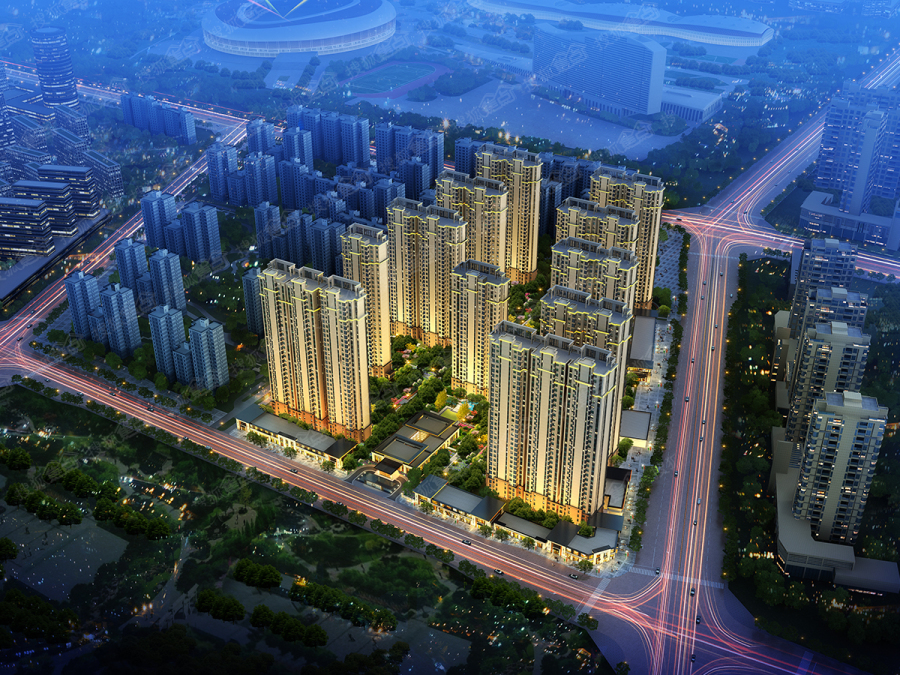

<!DOCTYPE html>
<html>
<head>
	<meta http-equiv="Content-Type" content="text/html; charset=utf-8" />
	<meta name="viewport" content="initial-scale=1.0, user-scalable=no" />
	<title>保利·西江月地图</title>
	<link rel="icon" type="image/ico" href="http://www.alphavisual.cn/favicon.ico" />
	<script type="text/javascript" src="http://api.map.baidu.com/api?v=2.0&ak=lGM3MgmVXebHiQL3zimN2iukqDDY7LHF"></script>
	<script type="text/javascript" src="http://api.map.baidu.com/library/SearchInfoWindow/1.5/src/SearchInfoWindow_min.js"></script>
	<link rel="stylesheet" href="http://api.map.baidu.com/library/SearchInfoWindow/1.5/src/SearchInfoWindow_min.css" />
	<style type="text/css">
		body, html{width: 100%;height: 100%;margin:0;font-family:"微软雅黑";}
		#allmap {height: 100%;width:100%;overflow: hidden;}
		#result {width:100%;font-size:12px;}
		dl,dt,dd,ul,li{
			margin:0;
			padding:0;
			list-style:none;
		}
		dt{
			font-size:14px;
			font-family:"微软雅黑";
			font-weight:bold;
			border-bottom:1px dotted #000;
			padding:5px 0 5px 5px;
			margin:5px 0;
		}
		dd{
			padding:5px 0 0 5px;
		}
		li{
			line-height:28px;
		}
		.ss{
			position: absolute;
			left: 10px;
		}
	</style>
</head>
<body>
	<div id="allmap"  style="position: relative">
        <span class="BMap_Marker BMap_noprint" unselectable="on"></span>
    </div>
	<div id="result" style="position: absolute;top: 10px;">
		<input class="ss" type="button" value="搜索" onclick="searchInfoWindow.open(marker);"/>
	</div>
<script type="text/javascript">
	// 百度地图API功能
    var map = new BMap.Map('allmap');
    var poi = new BMap.Point(112.534212,37.76753);
    map.centerAndZoom(poi, 16);
    map.enableScrollWheelZoom();

    var content = '<div style="margin:0;line-height:20px;height: 200px;padding:2px;">' +
                    '' +
                    '地址：山西省太原市晋源区保利西江月<br/>电话：0351-6128888<br/>' +
                    '简介：央企保利寻根太原文化之源，奉址龙兴之地晋源，借时代发展与文化融合之契机，于晋阳湖畔，奥体中心旁，打造一座新中式文化豪宅，以盛唐之风发掘太原人文精神内涵，重塑城市精神；以央企品牌之责任，重新标志一个城市的新旧更替。“两千五百年龙城 一座盛唐西江月”，晋阳湖时代是保利对于城市的展望，保利西江月是这个时代的人们对于保利的期望，西江月乘势而筑，以盛唐风文化豪宅，开启太原文化豪宅时代。'
                  '</div>';

    //创建检索信息窗口对象
    var searchInfoWindow = null;
	searchInfoWindow = new BMapLib.SearchInfoWindow(map, content, {
			title  : "保利·西江月",      //标题
			width  : 290,             //宽度
			height : 240,              //高度
			panel  : "panel",         //检索结果面板
			enableAutoPan : true,     //自动平移
			searchTypes   :[
				BMAPLIB_TAB_SEARCH,   //周边检索
				BMAPLIB_TAB_TO_HERE,  //到这里去
				BMAPLIB_TAB_FROM_HERE //从这里出发
			]
		});
    var marker = new BMap.Marker(poi); //创建marker对象
    marker.enableDragging(); //marker可拖拽
    marker.addEventListener("click", function(e){
	    searchInfoWindow.open(marker);
    })
    map.addOverlay(marker); //在地图中添加marker


</script>
</body>
</html>